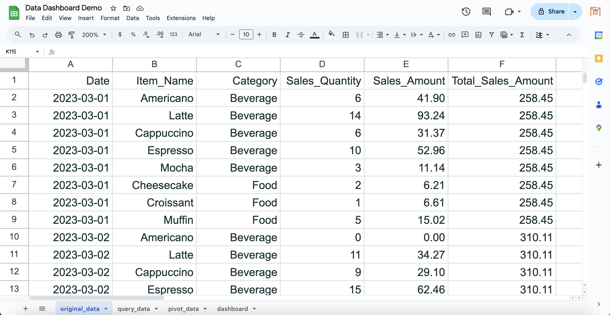

2024-07-17
In today's data-driven world, dashboards are an awesome way to visualize data and help us grasp and analyze trends better. Google Sheets isn't just free and easy to use; it also syncs your visualizations across different devices and makes sharing with others a breeze. This makes it perfect for creating interactive and dynamic data dashboards. In this article, I'll show you how to create a simple yet powerful dashboard using Google Sheets.
Data
Before creating the dashboard, we need to quickly organize the data to make sure it's clear and structured. Here's some sample sales data from a coffee shop, including things like item name, categories, sales quantity, and sales amount, etc. Our first step is to import this original data into Google Sheets. For this data sheet, we will only be performing searches on this data, cause it's important to keep the original data accurate.
Query Data
The interactive dashboard means that we can click on certain settings in the dashboard to view different data. In this example, we can select different time periods in the dashboard to observe sales in different time periods.
Therefore, we need to filter the raw data using the settings selected in the dashboard. Here we will introduce a useful function query(). In this step, we need to add a new data sheet to store the filtered data. And insert the query() function into the first cell. It should be noted here that the first parameter is the range you want to filter, which is means the original data, and the second parameter is the SQL command.
Here you can see that we use the function join() to concatenate different strings. The reason is that we need to use the values (dashboard!B1 and dashboard!D1) in the dashboard as filter conditions.
In this case, we use date as the filter condition, so we need to set the format of the date data first, which must conform to the SQL date format ("yyyy-mm-dd"), and add the date to the SQL command to convert text into date.
Dashboard
Next we can start designing the dashboard! For this example, we used line charts, bar charts, pie charts, and scorecard charts to visualize the data. And we will explain the data types required for these charts in Google sheets, then use an important technology (pivot table) to convert the data into what we need. Note that we should use query data as the basis to display the data.
Scorecard Charts
There are built-in scorecard charts in Google Sheets that can present the sum or average of a certain variable, but it is difficult to adjust to an appropriate layout design, so here we directly use cells to present the sum of sales and the most popular products. And use a function below the most popular products to display the proportion of the most popular products.
We just need to insert the function sum() then we can display the total amount of sales. For "Popular Product", we can refer to the code below. First, we can add a new sheet to store all pivot tables. Here we use the built-in function of Google Sheets to insert a pivot table ( insert -> Pivot table ), select the product in the row, and set the value to the sum of sales quantity and the sum of sales amount. It's worth noting that the range of the data table must be the dimension of the original data table (we need to make sure that any time period selected will work). Then, we can use the functions index(), match(), and max() to obtain the information we want to present.
| Item_Name | SUM of Sales_Quantity | SUM of Sales_Amount |
|---|---|---|
| Americano | 1102 | 6164.37 |
| Cappuccino | 1124 | 5901.53 |
| Cheesecake | 1235 | 6609.38 |
| Croissant | 1138 | 6262.42 |
| Espresso | 1026 | 5436.00 |
| Latte | 1152 | 6194.47 |
| Mocha | 1026 | 5631.37 |
| Muffin | 1099 | 6036.83 |
After that, we used the function (sparkline()) to set up a bar chart in the cell to show the sales ratio of the popular product.
Line Charts

Here, we use a line chart to show the daily changes in sales amount. Since the original data records the daily sales of a certain item, we need to first create a pivot table to count the daily sales. In the line chart of Google Sheets, we need to set an X-axis and one or more Series (Y-axis values). Here we set the "Date" as the X-axis and the "Total sales amount" as the Y-axis. We can set the amount in the pivot table to currency format, and it will automatically be presented in currency format on the chart.
| Date | Total_Sales_Amount |
|---|---|
| 2023-03-01 | $258 |
| 2023-03-02 | $310 |
| 2023-03-03 | $414 |
| 2023-06-30 | $222 |
Bar Charts
In the bar chart part, we will present the sales quantity of each item, and use different colors to indicate the category of the item (food/beverage), so we also first add a pivot table to calculate the number of sales for each product during this period. In Google Sheets, we need to use different series to control the colors in the chart, so in the pivot table, we need to define different product categories as different columns. In the pivot table, we can add the variable "Category" to the columns to divide it.
| Item_Name | Beverage | Food |
|---|---|---|
| Americano | 1102 | |
| Cappuccino | 1124 | |
| Espresso | 1026 | |
| Latte | 1152 | |
| Mocha | 1026 | |
| Muffin | 1099 | |
| Croissant | 1138 | |
| Cheesecake | 1235 |
Pie Charts
Pie charts can be used to present proportions of categorical variables. Here we use a pie chart to present the proportion of sales in each month and the proportion of sales quantity of each product. We can first use the function text(cell, "MMM") to convert the variable "Date" into a month, and use the function sumif() to calculate the sales amount of each month, as shown in the table below.
For the pie chart on the right, we can use a similar technique to create it. It is worth noting that we use a doughnut chart to wrap the pie chart to present the proportion of product categories. Then you just need to adjust the color to match and we're done! !
| Month | Total_Sales |
|---|---|
| Mar | $12,050 |
| Apr | $11,393 |
| May | $12,839 |
| Jun | $11,955 |
The Google sheets for this project
https://docs.google.com/spreadsheets/d/12Qo7CTjqBoMcd532LWWuEc1wz3y0SHQc4Xf1M0StGlI/edit?usp=sharing